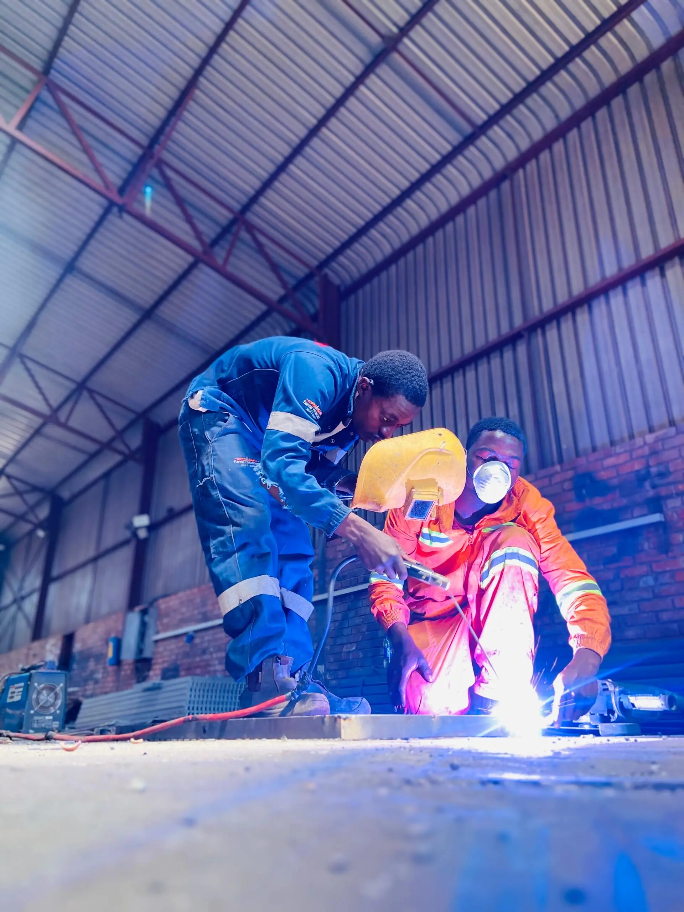

Kingson Engineering Steelwork specialists · Tynwald, Harare
Steelwork.Fabricated here.
Structural steel. Roofing. Precision fabrication.
From our workshop to your site.
What we need from you
- DXF or DWG preferred; STEP and PDF also accepted. No drawings? Send site photos or a sketch.
- Material, thickness and quantity, if known.
- Site or town, approximate span and height, or opening dimensions.
Attach drawings or photos by email or WhatsApp. This form does not upload files.
On site with Kingson / Roof steelwork
Explore the work- Fibre laser±0.1 mmDXTECH · 3 000 × 1 500 mm bed
- Cranage25 tOur own telescopic mobile crane
- WorkshopHarareNo. 1262 Tynwald Industries
- OpenMon–Sat07:30 – 17:00 · enquiries acknowledged the same working day
Selected work
The structure.
The detail.
Steelwork takes shape in the workshop. It comes into its own on site. A closer look at Kingson’s roof structures and architectural details.
Explore structural steelwork
Trusses & sheeting.
Two views from inside the roof structure: trusses, purlins and sheeting.

Steel roof structure.
Rafters, purlins and sheeting, seen from below.
Measured in the details.
Balustrades & fabricationWhat we need from you
- DXF or DWG preferred; STEP and PDF also accepted. No drawings? Send site photos or a sketch.
- Material, thickness and quantity, if known.
- Site or town, approximate span and height, or opening dimensions.
Attach drawings or photos by email or WhatsApp. This form does not upload files.
01Six services
From drawing. To standing.
One workshop, connected capabilities. Explore the steelwork, roofing, fabrication and lifting services behind your next project.
-
Structural steelwork
Made herefabricated at our Tynwald workshop Portal frames, columns, rafters and purlins — fabricated here in our own workshop and erected on site with our own crane. -
Roof steelwork and trusses
Any spanand any height Trusses, purlins and sheeting for a roof of any span and height, new build or re-roof. IBR and corrugated profiles, cut to 12 m, galvanised or pre-painted. -
Fibre laser cutting
20 mmmaximum cutting thickness Plate and sheet up to 20 mm thick, cut on a DXTECH fibre laser straight from your file. Mild steel, stainless, aluminium and galvanised sheet. -
Balustrades and roller shutter doors
3 000 mmmaximum fold length Balustrading, handrails and roller shutter doors, fabricated to your opening and finish. -
General metal fabrication
4 metalsmild, galvanised, stainless, aluminium Sheet, plate and section work in mild steel, galvanised, stainless and aluminium — cut, folded and fabricated to drawing. -
Mobile cranage
25 ttelescopic mobile crane Our 25-tonne telescopic mobile crane, for lifting and placing steel — on our jobs or yours.


What we need from you
- DXF or DWG preferred; STEP and PDF also accepted. No drawings? Send site photos or a sketch.
- Material, thickness and quantity, if known.
- Site or town, approximate span and height, or opening dimensions.
Attach drawings or photos by email or WhatsApp. This form does not upload files.
±0.1 MM
cutting tolerance, repeating to ± 0.03 mm
02Fibre laser
Straight from your file.
Plate and sheet cut on a DXTECH fibre laser — nested from the drawing you send and cut on a 3 000 × 1 500 mm bed. Mild steel, stainless, aluminium and galvanised sheet.
- Mild steel
- 20 mm on oxygen
- Stainless steel
- 10 mm on nitrogen
- Aluminium
- 8 mm on nitrogen
- Galvanised sheet
- 4 mm on nitrogen
- Files accepted
- DXF · DWG · STEP · PDF
Send a DXF, DWG, STEP or PDF with the material and thickness.
What we need from you
- DXF or DWG preferred; STEP and PDF also accepted. No drawing? Send a sketch or photo with dimensions.
- The material and thickness — mild steel, stainless, aluminium or galvanised sheet.
- The quantity, and whether you want the parts deburred or left as cut.
Attach drawings or photos by email or WhatsApp. This form does not upload files.

03The workshop
Tynwald IndustriesHarare
This is where the work happens.
Based in Tynwald, Harare, working at clients’ sites across Zimbabwe. The laser, the folder and the fabrication bays are under one roof at No. 1262 Tynwald Industries. Steelwork is fabricated here, with erection and cranage carried out on site.
- Open
- Monday to Saturday, 07:30 – 17:00
- Ask for
- Mr Murandu
What we need from you
- DXF or DWG preferred; STEP and PDF also accepted. No drawings? Send site photos or a sketch.
- Material, thickness and quantity, if known.
- Site or town, approximate span and height, or opening dimensions.
Attach drawings or photos by email or WhatsApp. This form does not upload files.
04Mobile cranage
25 t
Telescopic mobile crane
Our 25-tonne telescopic mobile crane, for lifting and placing steel — on our jobs or yours.
What we need from you
- The load — what it is and roughly what it weighs.
- The site address and the access: gate width, overhead lines, ground conditions.
- The date you need it, and for how long.
Attach drawings or photos by email or WhatsApp. This form does not upload files.
05Specifications
The numbers we work to.
Every figure Kingson confirmed, by material and profile.
IBR sheeting
- Cover width
- 686 mm, five ribs
- Rib height / pitch
- 36 mm / 200 mm
- Gauges stocked
- 0.47 · 0.53 · 0.58 mm
- Minimum roof pitch
- 5°; 7° with side laps
- Maximum purlin spacing
- 1 800 mm at 0.53 mm
- Maximum sheet length
- cut to 12 m
- Finishes
- galvanised or pre-painted
Corrugated sheeting
- Cover width
- 762 mm, 10.5 corrugations
- Crest height / pitch
- 17.5 mm / 76 mm
- Gauges stocked
- 0.4 · 0.47 · 0.53 mm
- Minimum roof pitch
- 10°; 12° exposed
- Maximum purlin spacing
- 1 200 mm at 0.47 mm
- Curving
- from 6 m radius, sprung on site
Flashings and custom folding
- Maximum fold length
- 3 000 mm
- Material range
- 0.4 – 3.0 mm · mild steel, galvanised, stainless, aluminium
- Standard items
- ridge, barge, valley
- Lead time
- 3 – 5 days on a stock gauge
Fibre laser
- Machine
- DXTECH
- Bed size
- 3 000 × 1 500 mm
- Mild steel
- 20 mm on oxygen
- Stainless steel
- 10 mm on nitrogen
- Aluminium
- 8 mm on nitrogen
- Galvanised sheet
- 4 mm on nitrogen
- Tolerance
- ± 0.1 mm, repeatability ± 0.03 mm
- File formats accepted
- DXF, DWG, STEP, PDF
Cranage and erection
- Crane type
- telescopic mobile
- Lifting capacity
- 25 tonnes
- Cranes
- one
- Erection area
- Harare and nationally
What we need from you
- DXF or DWG preferred; STEP and PDF also accepted. No drawings? Send site photos or a sketch.
- Material, thickness and quantity, if known.
- Site or town, approximate span and height, or opening dimensions.
Attach drawings or photos by email or WhatsApp. This form does not upload files.
06How it works
Clear commitments. From the first enquiry.
Know when you will hear from us, when to expect your price, and how a portal frame programme runs.
- 01
Enquiry acknowledged
Same working day
Your enquiry is acknowledged by the office.
- 02
Written quotation
Within 5 working days
A written price for the work you have described.
- 03
Site visit arranged
Within 2 working days
Where the job needs a visit.
- 04
Portal frame programme
6–10 weeks from order
For portal frame work. Other services are programmed in your quotation.
Start with drawings, site photos or a brief description.
Send us the briefWhat we need from you
- DXF or DWG preferred; STEP and PDF also accepted. No drawings? Send site photos or a sketch.
- Material, thickness and quantity, if known.
- Site or town, approximate span and height, or opening dimensions.
Attach drawings or photos by email or WhatsApp. This form does not upload files.

07Get a price
Send us the brief.
Tell us what you need. Enquiries are acknowledged the same working day.
Ready to send.
08Questions
Questions we get asked
Not answered here?
Ask the workshop directly. Enquiries are acknowledged the same working day.
What we need from you
- DXF or DWG preferred; STEP and PDF also accepted. No drawings? Send site photos or a sketch.
- Material, thickness and quantity, if known.
- Site or town, approximate span and height, or opening dimensions.
Attach drawings or photos by email or WhatsApp. This form does not upload files.
How long does a quotation take?
Enquiries are acknowledged the same working day, and a written quotation follows within 5 working days. Where the job needs someone on site first, the site visit is arranged within 2 working days.
How long does a steel structure take?
A portal frame programme runs 6–10 weeks from order. A written quotation comes within 5 working days of your enquiry, and a site visit is arranged within 2 working days where the job needs one.
How do I get a price?
Send drawings or a description by WhatsApp on +263 772 262 869, or email admin1@kingsonengineering.co.zw. Technical drawings can go to technical@kingsonengineering.co.zw. Enquiries are acknowledged the same working day.
Where is Kingson Engineering based?
Kingson Engineering trades as Kingson Trading (Pvt) Ltd and works from one workshop at No. 1262 Tynwald Industries, Harare, Zimbabwe. It is open Monday to Saturday, 07:30 to 17:00, and enquiries reach Mr Murandu.
What areas do you cover?
Harare, and nationally across Zimbabwe. Erection is covered nationally and delivery outside Harare is priced per load.
Can I get a price without drawings?
Yes. Send site photos and a brief description, with the approximate span and height or opening dimensions. Include material and thickness if known. Where the job needs someone on site, a site visit is arranged within 2 working days, and a written quotation follows within 5 working days.
What can Kingson Engineering do?
Six things: structural steelwork, roof steelwork and trusses, fibre laser cutting, balustrades and roller shutter doors, general metal fabrication, and mobile cranage. All of it is fabricated at the Tynwald workshop and erected with Kingson’s own crane.
09Where to find us
Talk to us.
Call the workshop during working hours, or send a message any time.
- Mobile
- +263 772 262 869
- +263 772 262 869
- Office
- +263 242 304 341
- Ask for
- Mr Murandu
- Enquiries
- admin1@kingsonengineering.co.zw
- Drawings and technical
- technical@kingsonengineering.co.zw
- Workshop
- No. 1262 Tynwald Industries, Harare
- Open
- Monday to Saturday, 07:30 – 17:00
View the workshop on Google Maps. Loading the map connects to Google and may use its cookies.